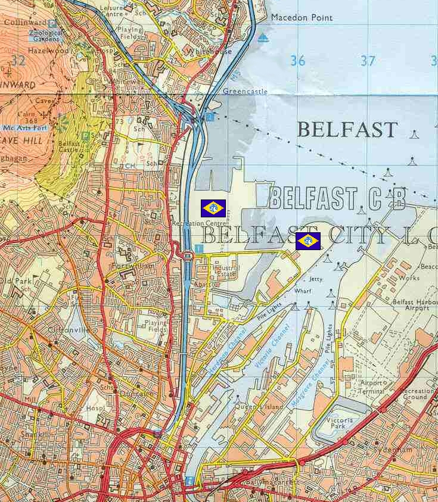

Belfast Belfast
Europe, Ireland Coastal Urban Fortress Ryer Located in southern Island, Belfast is the Federations main stronghold in the European front, coordinating the current push into the mainland. While Ireland and the British Isles are firmly in Federation control, their dominance does not extend far into the mainland, even though they are currently gaining ground against the duchy. Belfast is part of one of the larger urban centers of the Universal Century, remaining an area of thick habitation despite the migrations to space. Although not as warm as much of the rest of Europe, its climate remains fairly temperate. Ryer Known throughout the Federation for his ruthlessness and effectiveness at military tactics, commander Ryer is one of the best tacticians in the Federation, and deserves his position as commander of the primary front line of the ground war. However, anything goes in Ryers playbook, and he is known for planning several contingency plans for every operation, refusing to let victory slip through his iron grasp. Belfast  |